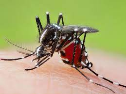
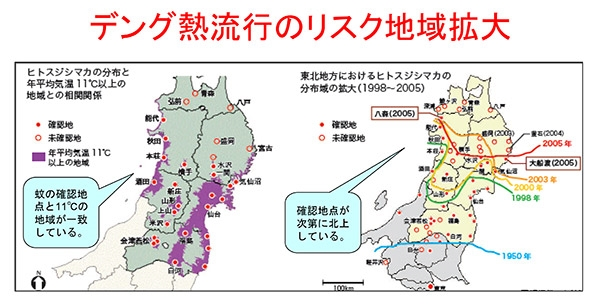
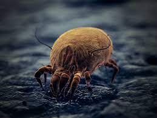
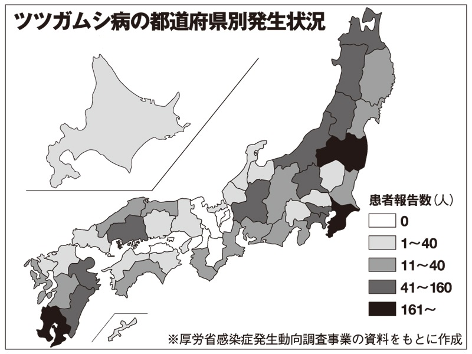

温暖化によって影響を受ける節足動物
カについて

蚊は本来暖かい地域を好むため、赤道近くから北緯40度あたりに生息しています。そのためアフリカや東南アジアでは昔から、蚊が媒介する病気によってたくさんの人が命を落としてきました。蚊が媒介する病気の例として黄熱病、デング熱、日本脳炎など様々な聞き覚えのある病名が確認できるでしょう。元来日本ではウイルスを媒介する蚊の一種であるヒトスジシマカが生息しており、しかも海外と比べると生息密度が高いのでウイルスを持った蚊に刺される危険性が高いです。日本にいる蚊は年平均気温11度以上の地域に生息するので、1940年代後半は東北地方以北には蚊の確認がなされていませんでした。しかし1990年代以降のたった15年間で青森県で確認されるなど、主に温暖化の影響で生息地の北上がみられてきました。蚊が北上したことによりデング熱などの危険な病気が東北地方でも見られるようになってしまいました。

ではどのように予防するのがいいのでしょうか。蚊の幼虫はボウフラといい水中に生息します。このことから、蚊は水がある場所に卵を産み付ける事がわかります。だから蚊の発生を防ぐためには水が溜まったままにしてはいけません。雨が降った後のタイヤの中であったり、屋外にある水槽などでよく湧いてしまうので注意しましょう。では蚊がいるような場所に行く際の注意点を述べます。まずは服装についてですが、極力刺されないような長袖長ズボンで行くことをおすすめします。ですが夏に遊ぶ時などそのような服装にしたくない場合は、しっかりと虫よけスプレーや蚊取り線香を使用するのが良いでしょう。各自治体の掲示板などにも注意喚起のポスターが貼られているので、確認してみてください。
ダニについて

ダニは蚊と異なって日本全域に生息しています。特に草むらや藪の中にいることが多いので野原や山に多くいます。本来は標高が高い場所は少し寒くダニの活動はあまり活発ではありませんが、温暖化の影響で標高が高い場所でもダニに咬まれやすくなってしまっています。日本に生息しているダニの殆どはマダニです。ダニは人や動物を咬んで血を吸いますが、その時にダニの体液が人間の体内に残ることで発症します。ダニが媒介する病気の例で特に日本で多いものはツツガムシ病や日本紅斑熱です。あまり聞いたことが無いかもしれませんが、ツツガムシ病は現在においても年間400人以上がなっています。
